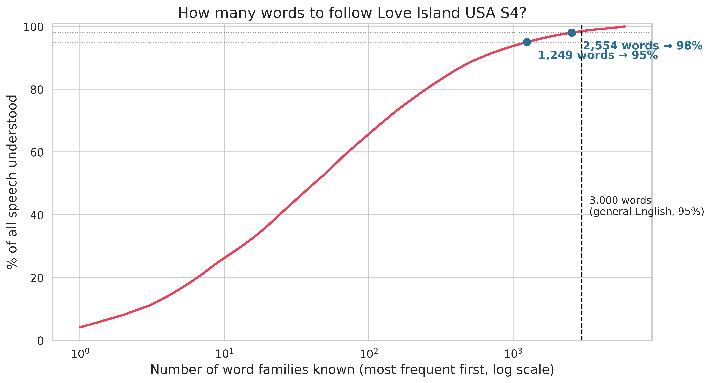
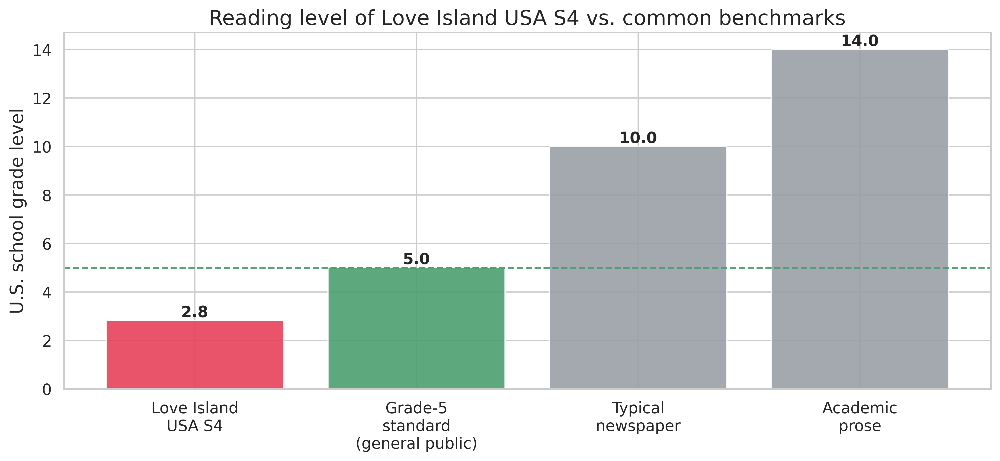
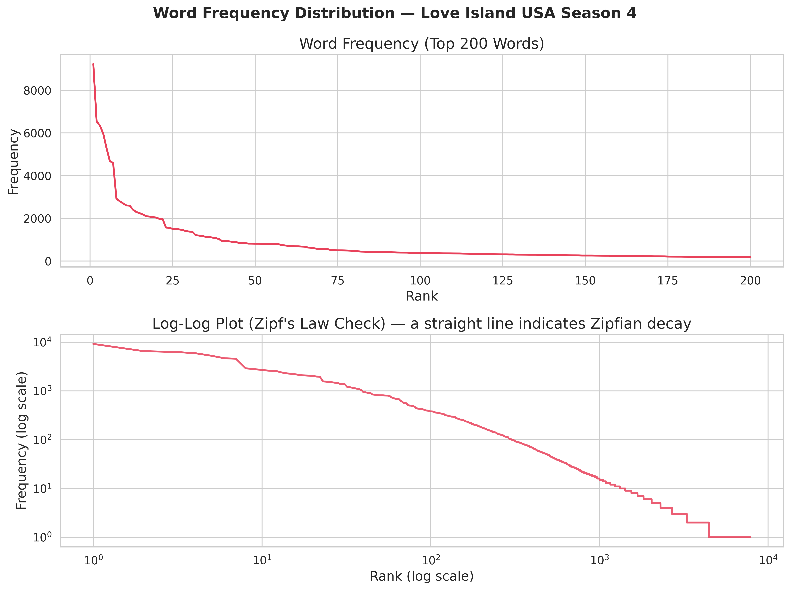
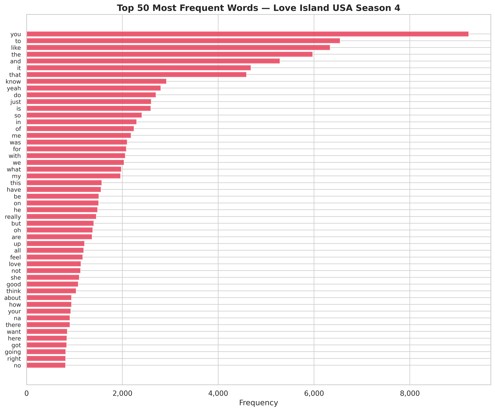
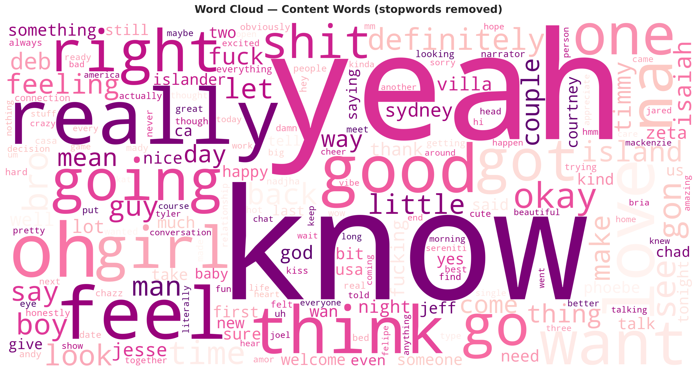
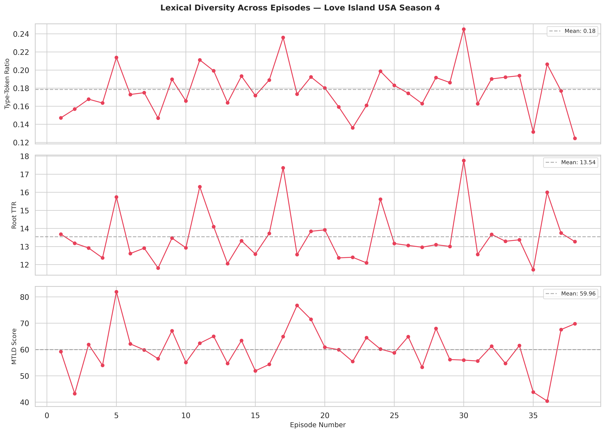
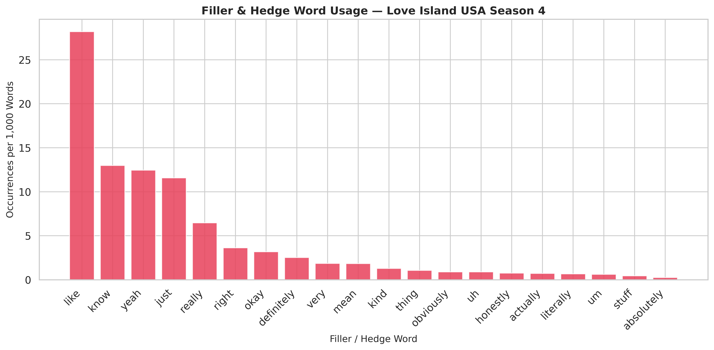
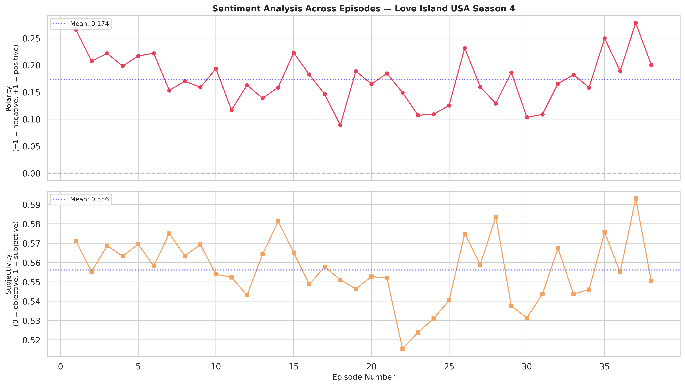
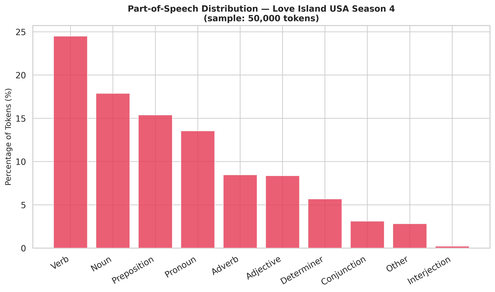

Love Island USA, season 4, 38 episodes
I scraped the subtitle transcripts for all 38 episodes, 224,815 words in total, and measured how much English a viewer needs to follow them. The 100 most common words make up 61% of the speech. Published estimates for everyday English put 95% coverage at about 3,000 word families, so this show needs well under half that.
A line from episode 1. Under each word is its word-family rank in the
season's corpus ("is" counts as "be"). A viewer who knows the top 1,250 families
understands the first five words; the two in italics fall outside. Ranks computed
with the lemmatizer from scripts/analyze_vocab_level.py.
of all speech is the 100 most common words. The top 10 alone are 22.7%.
word families reach 95% coverage, and 2,554 reach 98%.
Flesch-Kincaid grade level, with a Flesch Reading Ease of 90.2. 97.9% of words are on the Dale-Chall list of 3,000 familiar words.
for the Zipf fit of log frequency on log rank, slope −1.45.
The question
Making fun of reality TV dialogue is easy and tells you nothing. I wanted the language learner's question answered instead: how many words do I need before I can follow this? Intermediate learners are routinely told to watch native-speaker television, and most of it is too hard for them.
A corpus turns that into a number. Rank every word family by frequency, add up their share of the speech, and read off how many families it takes to reach 95% coverage.
Vocabulary load
word families for 95% coverage; 592 for 90%, 2,554 for 98%.
The benchmark I compare against is from the published literature: about 3,000 word families for 95% coverage of everyday spoken English (Adolphs and Schmitt 2003; Nation 2006), and about the same for TV dialogue in general (Webb and Rodgers 2009). Even 98% of this show sits below that 3,000 mark.

scripts/analyze_vocab_level.py.Reading level
Flesch-Kincaid puts the whole corpus at grade 2.8, and every episode falls between 2.3 and 3.7. textstat's consensus estimate is grade 3.0. The formulas that weight syllables or unfamiliar words read higher: SMOG gives 6.9 and the approximate Dale-Chall grade is 7.3. Only 2.1% of the words spoken fall outside the Dale-Chall list of 3,000 familiar words.

The distribution
Word frequency follows Zipf's law closely (regressing log frequency on log rank gives R² = 0.981 and a slope of −1.45), as most natural language does. The surprise is how much the head carries. The top 10 words are 22.7% of all speech, the top 100 are 61.0%, and the top 1,000 are 91.1%. "You", "to" and "like" are the three most common words, and "like" alone is 2.8% of everything said.



Texture
Lexical diversity averages an MTLD of 59.96 per episode and has no trend across the season (Spearman ρ = −0.03, p = 0.87). Sentiment polarity from TextBlob stays positive in every episode, also with no trend. Adjectives are only 8.4% of words, against 24.5% verbs and 13.6% pronouns.
The filler words are frequent enough to chart on their own: "like" appears 28 times per 1,000 words, "know" 13, "yeah" 12 and "just" 12. This is unscripted speech, and unscripted speakers lean on a small stock of words.




Limitations
This is one season of one show, and generalizing to reality TV as a genre would take more seasons to compare against.
Subtitles drop things that make speech hard to follow: overlapping talk, accents, and speed of delivery. A show can be lexically easy and still hard to parse at full speed, so the coverage number is a lower bound on difficulty.
Word families are approximated by WordNet lemmatization, which merges inflections ("making" to "make") but not derived forms. Readability formulas were built for written prose and disagree on this dialogue, from grade 3 to about 7.
Method
The repository ships the cleaned corpus, one .txt per episode
plus a combined CSV, so every number can be checked. The paper is written in
Markdown, converted to LaTeX by a script in the repo, and compiled to PDF.